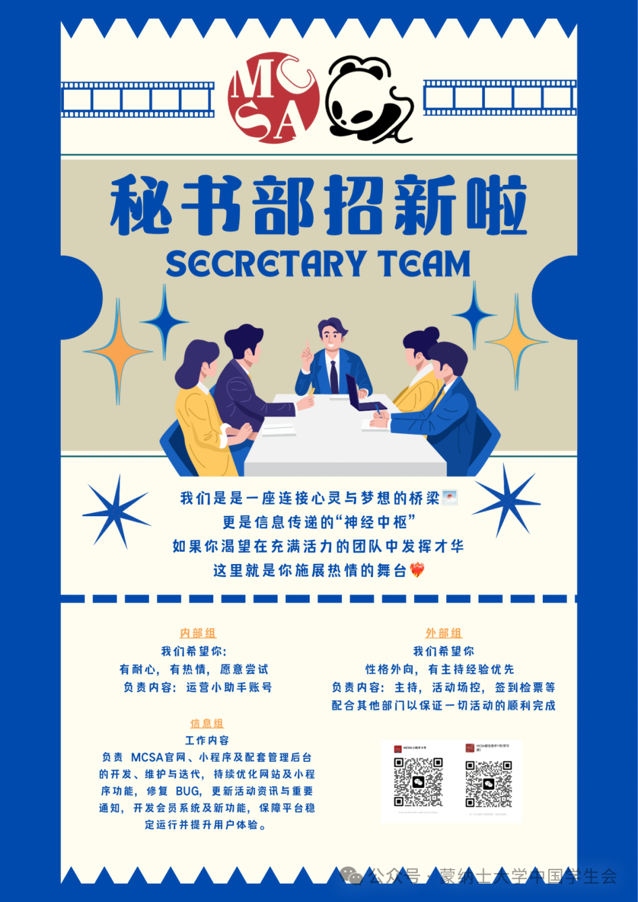
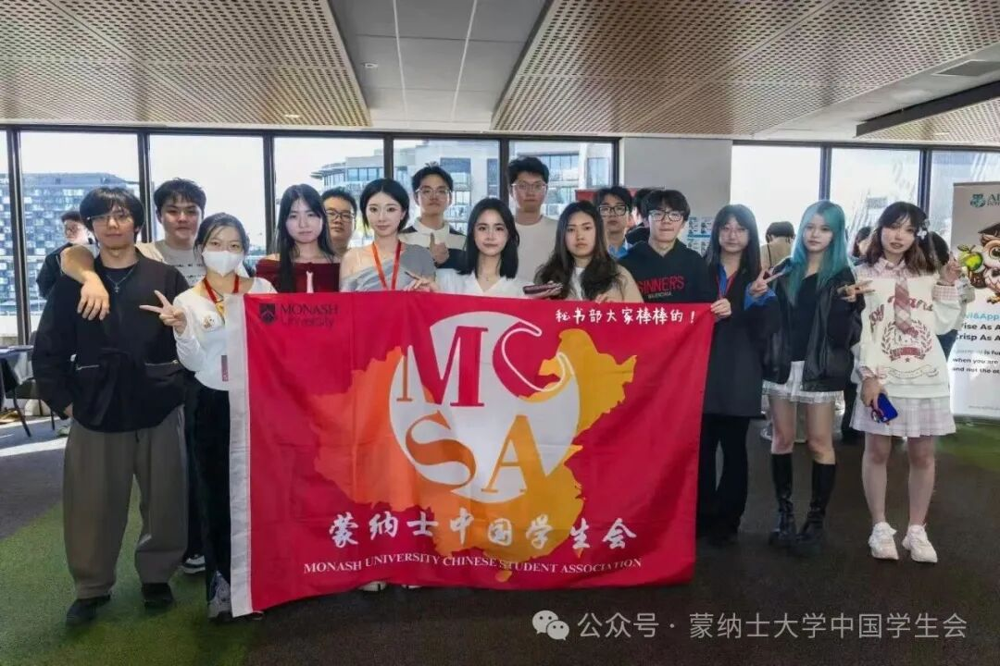
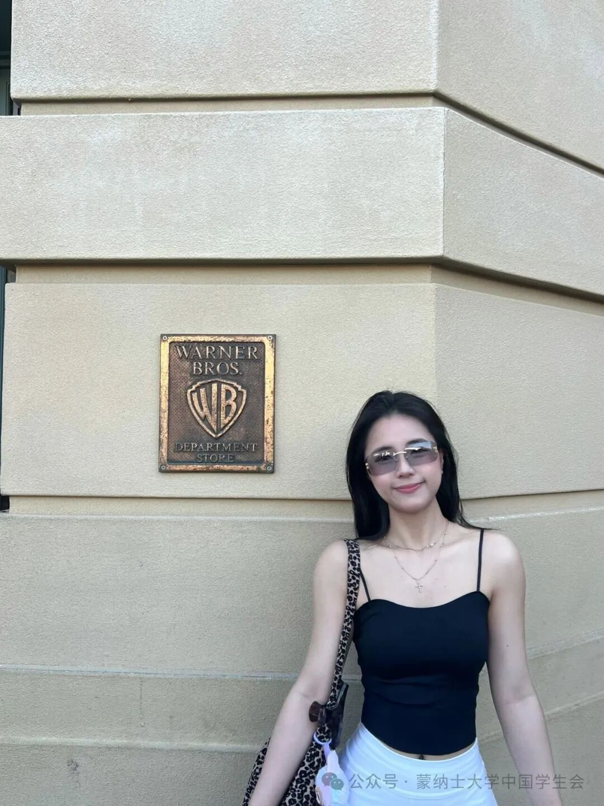
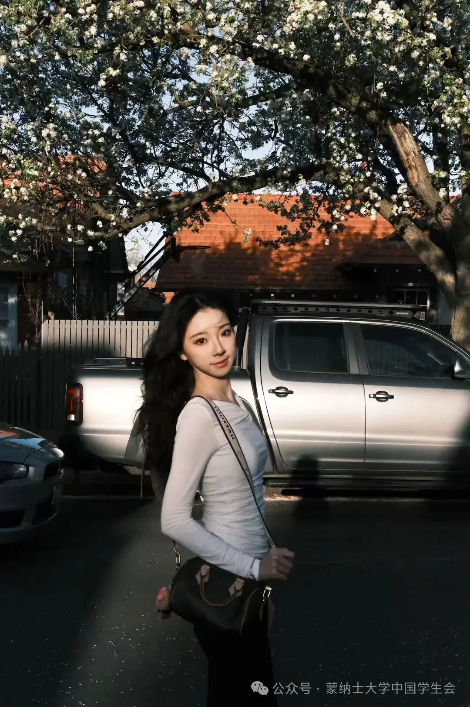
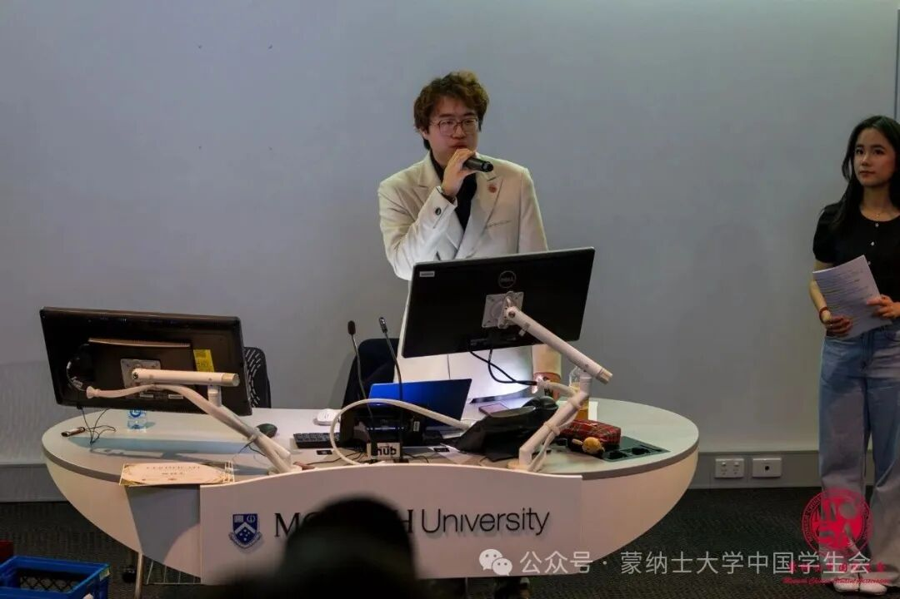
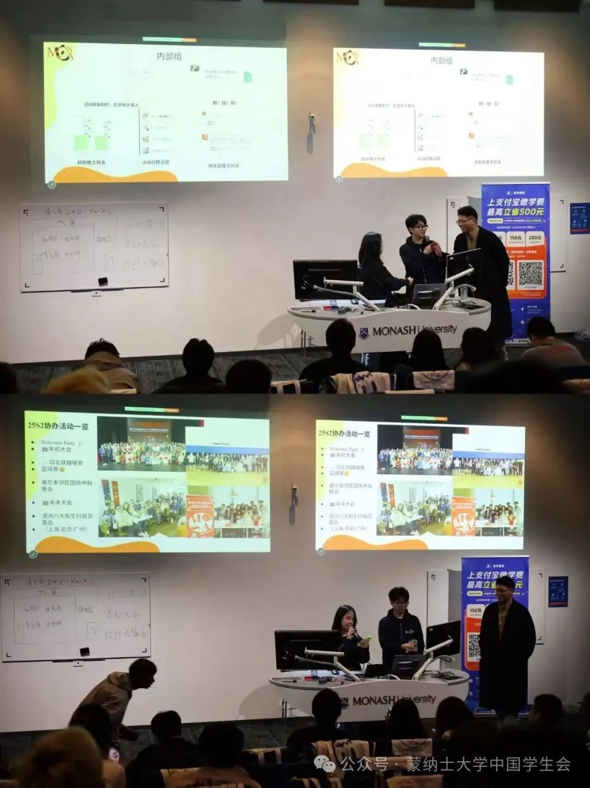
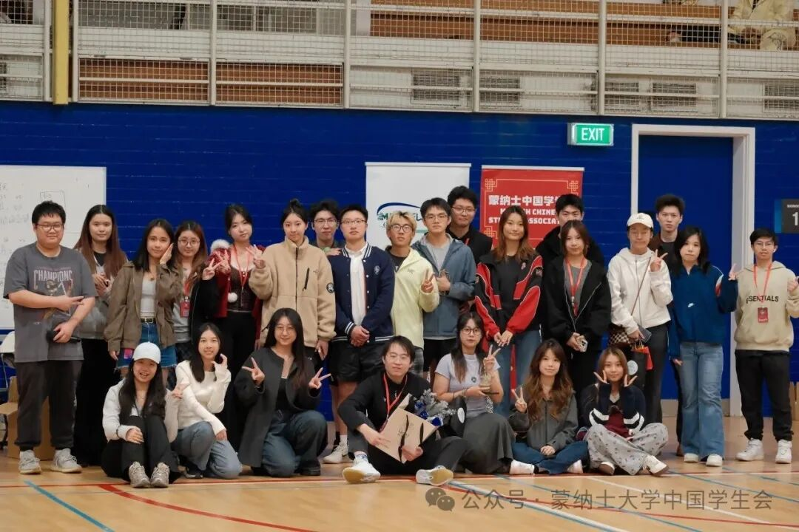
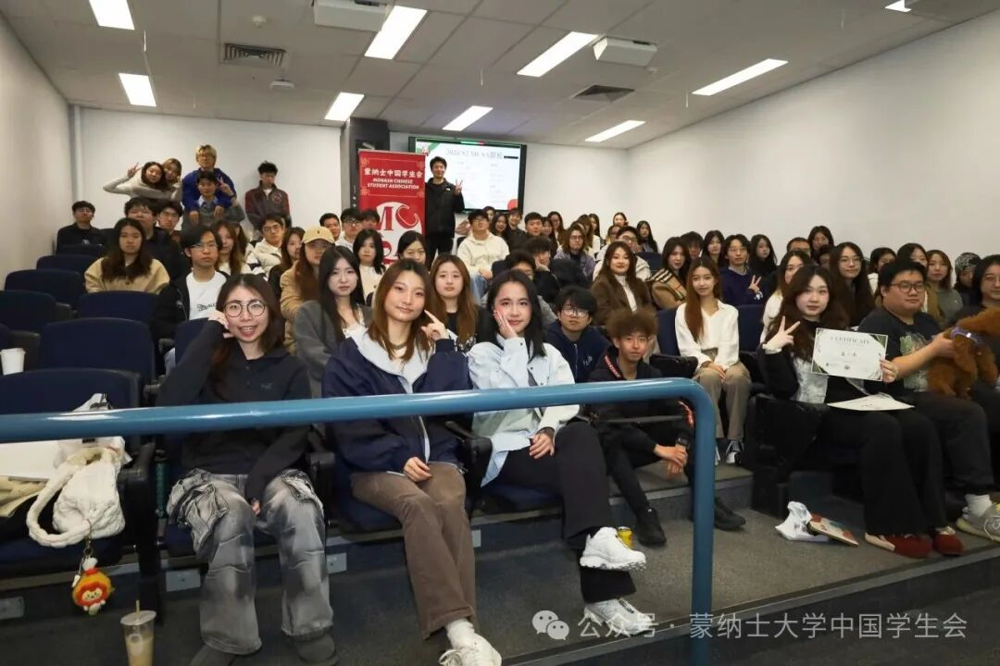
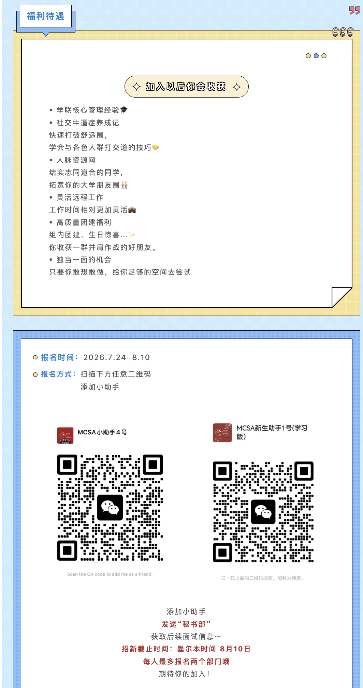

秘书部
往期招新 · 2026年7月24日–8月10日（墨尔本时间）。本轮报名已结束；最新招新安排请关注官方微信公众号。

关于我们
📣 你是否想要扩展社交圈 结识更多优秀的小伙伴？
📣 你是否想要站上舞台 成为活动的C位担当？
📣 你是否热爱管理与组织 愿意为学联贡献一份力量？
加入我们 成为学联的幕后英雄 让你的大学生活更加精彩！

秘书部是学联的坚实后盾 在活动准备、执行、 信息传递和部门协调交流中有我们的身影 我们既是学联对外的窗口，也是内部沟通的桥梁，更是每场活动的幕后支柱！
💙 我们的使命 让Monash的小伙伴们 感受到温暖、获得帮助、收获快乐！
💙 我们的工作 管理、沟通、 主持、技术支持，样样精通！
💙 我们的福利 社交、能力提升、 部门团建、脱单机会（？） 一应俱全！
部长寄语
部长
胡佳怡 Jennifer

hello hello 我是Jennifer 这学期担任秘书部部长 也是一个外冷内热的天蝎座 墨尔本不知名小博主和中华小厨娘 希望加入秘书部的同学们 在MCSA中留下浓墨重彩的一笔
对外副部长
叶芮麟 Selina

嗨！我是叶芮麟Selina🤗 本人白羊座＋enfp 新序启幕，愿与各位同心同行， 学联共同书写充实耀眼的新学期。
对内副部长
郭婧铃 Ashley
hello大家好我是Ashley，这学期担任秘书部对内副部长。希望加入秘书部的同学们，在未来的工作生活中大家都能有所收获。
信息副部长
郭宇 Hugo
大家好，我是Hugo，目前在读Business 和 IT 双专业。这学期担任秘书部信息组部长，我相信我们在MCSA中相遇是注定的。 缘起缘灭，缘聚缘散，乃众生法相。与君相逢，亦是自然。愿与君共行世间路，愿诸君身心清静，福寿康宁。福生无量天尊！
部门核心小组
外部组
活动C位担当
我们要做的： 整理当天需要的主持或管理流程
参加活动彩排or会议： 确认设备，人员安排，确保一切顺利进行
正式进入活动后： 担任主持、记分员、裁判员等角色
活动结束后： 协助总结活动情况，收集反馈， 为下次活动做更好优化
主持｜场控｜活动管理｜现场调度｜沟通力

内部组
暖心运营小管家
我们要做的： 为新生答疑解惑、传递福利资讯， 搭建高效沟通桥梁，维护社群良好秩序
日常运营服务中： 用心对接沟通、细心统筹安排， 跟进活动全流程细节与关键注意事项
活动筹备期间： 统筹物资采购、场地协调与现场布置， 完成签到统计与人员安排
小助手运营｜内部管理｜细心与温暖｜沟通桥梁

信息组
线上平台建设者
我们要做的： 负责MCSA线上平台搭建、开发与长期运维， 更新活动资讯，完善实用功能， 为同学们提供便捷高效的线上服务
日常运营服务中： 持续维护官网、小程序稳定运行， 定期迭代优化平台功能， 及时处理技术问题，持续优化使用体验
技术支持保障上： 负责官网与小程序搭建开发、 日常运维、功能迭代更新， 为MCSA提供全方位技术支持
平台搭建｜程序开发｜技术学习｜技术保障
岗位要求
外部组
工作内容
- 主持人
- 裁判员
- 签到检票等
工作要求
- 普通话流畅
- 外向活泼
- 有主持经验更佳
内部组
工作内容
- 担任运营小助手，负责发布组织内部活动资讯，统筹新生及新干事的沟通对接、联络协调等工作，保障组织信息高效传递。
- 协助组织开展大型活动，承担现场布置、人员签到等执行保障工作，确保活动有序落地、顺利开展。
工作要求
- 有耐心、有热情愿意承担工作，0经验也OK！
- 具备良好服务意识与同理心，耐心细致、善于倾听
- 情绪稳定、能以积极心态处理各类新生问题
- 责任心强、沟通得体，具备良好团队协作精神
信息组
原文招募10名新成员（往期名额）。
网站组
负责 MCSA 网站的开发、维护与迭代，让功能更完善、体验更顺滑（全栈开发）。
- 本科以上，在读IT、CS、arts（美术方向）和Design（视觉方向）专业优先录取
- 有基础编程能力或对编程有极大兴趣者优先录取
- 对全栈开发感兴趣的优先录取
- 良好的沟通与团队协作意识
小程序组
负责 MCSA 微信小程序的开发与维护（功能开发、Bug 修复、上线迭代等）。
- 本科以上，在读IT、CS、arts（美术方向）和Design（视觉方向）专业优先录取
- 对小程序开发有兴趣（WXML/WXSS/JS/TS）
- 愿意投入时间学习并持续输出
- 良好的沟通与团队协作意识
我们更看重学习能力、责任心与持续投入；不会也没关系，愿意学就行。

Daily life

想要成为温暖的小助手？ 来内部组！ 想要站上舞台成为焦点？ 来外部组！ 想要积累项目经验，锤炼自身技术实力？ 来信息组！ MCSA秘书部 等你来解锁更多精彩🔥
福利待遇
学联核心管理经验 🎓
社交牛逼症养成记 快速打破舒适圈，学会与各色人群打交道的技巧 🤝
人脉资源网 结交志同道合的同学，拓宽你的大学朋友圈 🧑🤝🧑
灵活远程工作 工作时间相对更加灵活 💼
高质量团建福利 组内团建、生日惊喜…✨ 你收获一群并肩作战的好朋友。
独当一面的机会 只要你敢想敢做，给你足够的空间去尝试
往期报名方式
往期招新 · 2026年7月24日–8月10日（墨尔本时间）。本轮报名已结束；最新招新安排请关注官方微信公众号。
原文报名时间：2026年7月24日–8月10日。 添加MCSA小助手，发送“秘书部”获取后续面试信息。 截止时间：墨尔本时间8月10日。每人最多报名两个部门。 以下二维码和招募名额来自已结束的招新轮次，不代表当前开放报名。
